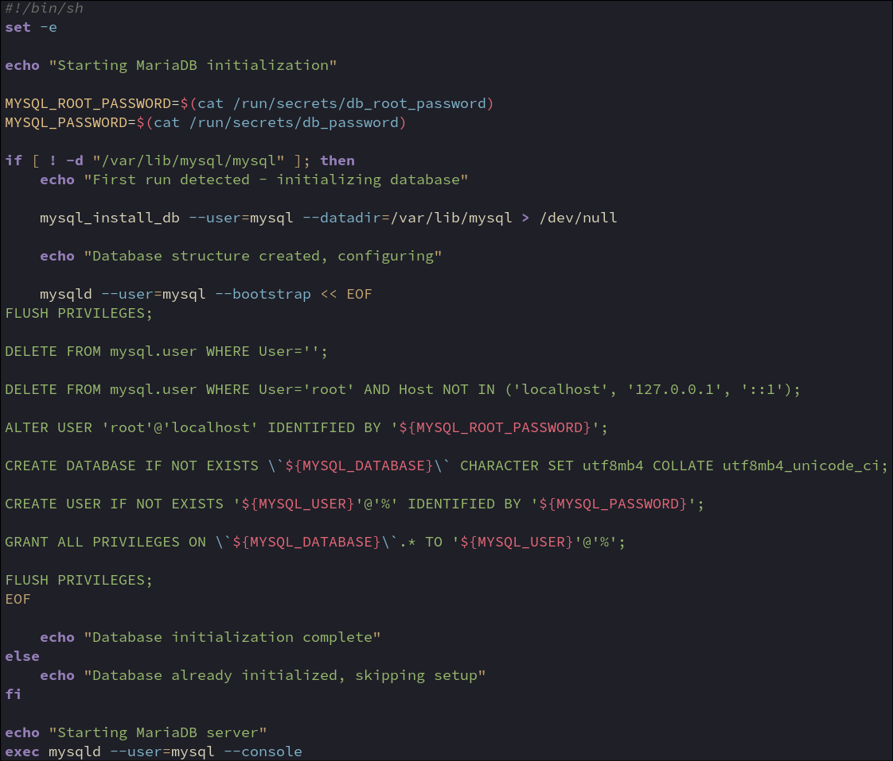

Exit on error
If any command fails, the script will exit and mariadb will not run with incomplete setup
Reads passwords from Docker secret files (mounted at /run/secrets/)
Secrets created by Makefile (openssl rand -base64 32)
Passed to container via docker-compose.yml secrets: section
Mounted as read-only files (not environment variables)
secrets/ dir ignored by git (not stored in repo)
MYSQL_DATABASE and MYSQL_USER passed as env variables (non-sensitive)
Checks if mysql system database exists
mysql/ is created by mysql_install_db on first run
If mysql/ exists = database already initialised, skip setup
If mysql/ missing = first run, initialise database
Works because /var/lib/mysql is mounted from host (persistent)
Initializes MariaDB system database structure
--user=mysql: Run as mysql user (security, not root)
--datadir=/var/lib/mysql: Where to create database files (volume mount)
> /dev/null: Suppress stdout (silence verbose output)
Creates mysql/, performance_schema/, and system tables
Must run before MariaDB can start
Runs MariaDB in bootstrap mode (special initialization mode)
Allows running SQL commands during initial setup
--bootstrap: Single-user mode, reads SQL from stdin, then exits
--user=mysql: Run as mysql user (security)
<< EOF: Heredoc - feeds SQL commands to stdin
Used for: setting passwords, creating users, initial configuration
Exits after SQL completes (EOF)
Reloads privilege tables from disk into memory
Does NOT reset to defaults - just refreshes cache
Required after direct table modifications (DELETE/INSERT/UPDATE on mysql.user)
NOT required after GRANT/REVOKE/CREATE USER/ALTER USER (auto-flush)
Used twice in script:
First: Clean state before modifications
Last: Ensure all changes applied
Like "reload config" - applies changes without reset
Removes anonymous users (empty username)
mysql_install_db creates these by default (legacy MySQL behavior)
Security risk: allows connections without authentication
After deletion: only authenticated users can connect
Deletes any non-local root users
Remote users do not require root access
Modern mariadb may not create remote root, but older versions might
Defensive programming - ensures security regardless of version
Main target: root@'%' (root from anywhere)
Keeps only local root: localhost (socket), 127.0.0.1 (IPv4), ::1 (Ipv6)
Sets password for root@'localhost' user
Password from Makefile-generated secret (via Docker secrets)
${MYSQL_ROOT_PASSWORD} = env variable substitution
‘localhost’ = connects via unix socket
After this: root requires password for authentication
If database doesn't exist, create it
\` = escaped backticks (protects special characters in database name)
${MYSQL_DATABASE} = variable (e.g., 'wordpress')
CHARACTER SET utf8mb4 / COLLATE utf8mb4_unicode_ci
Ensures database uses same encoding as server default
Safe to run multiple times (IF NOT EXISTS)
Creates user if doesn't exist
${MYSQL_USER} = username from .env file
@'%' = can connect from any host (required for Docker networking)
${MYSQL_PASSWORD} = password from Docker secret (Makefile-generated)
IF NOT EXISTS = safe to run multiple times (no error if user exists)
WordPress container uses this user to connect to database
Grants all privileges to wordpress_user on wordpress database
ALL PRIVILEGES = SELECT, INSERT, UPDATE, DELETE, CREATE, DROP, ALTER, etc
\`${MYSQL_DATABASE}\`.* = all tables in wordpress database
.* = wildcard for all tables
TO '${MYSQL_USER}'@'%' = for this specific user@host
User can: read, write, delete, modify tables, create/drop tables
Limited to wordpress database only (can't access mysql, other databases)
Principle of least privilege - full access to own database, nothing else
Starts the mysql daemon as the mysql user (only access to own data dirs)
--console = logs to stdout/stderr
keeps the process in the foreground instead so the docker container stays alive
does the same job here as the 'daemon off' option for nginx in the nginx container entrypoint.sh
exec replaces the shell process with mysqld (makes it PID 1 for proper signal handling – docker can pass sigterm etc directly to mysqld instead of the shell wrapper)